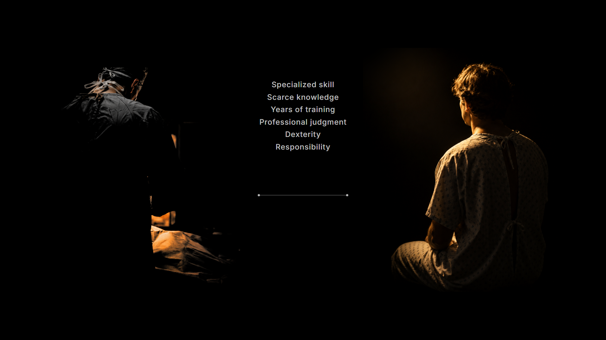
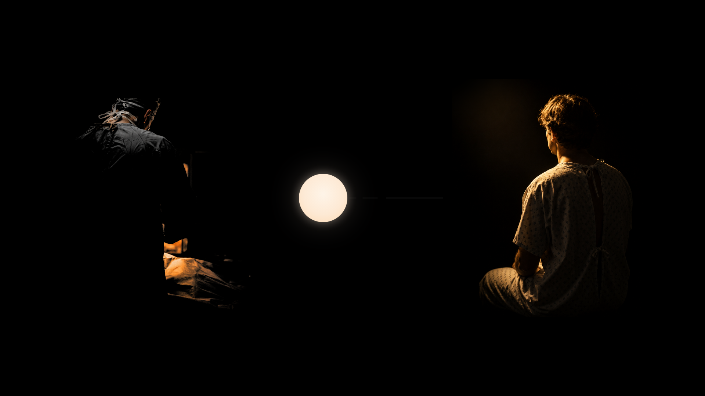

The ten §3 frames as ruled on 25 August 2026. Prototype Gate 1 chose candidate A, the luminous disc, so every mark here is A and P1-F1 did not re-render. S2-F1 takes the photographic patient, now regraded and shipping. S3-F1 takes compositional attempt 2 with that same photograph in place of the line glyph — the one frame whose composition changed. P2-F1 drops the hours-field ghost. Every alternative stays on file beside these stills, and the sheet the presenter marked up is contact-sheet-markup.png.
Prologue
P1-F1 — the completed hours field · approved as rendered · no re-render (Gate 1 chose the disc)P1-F2 — mid-morph: the GOLD form · display scale, centered lowP1-F3 — the title frame (the thumbnail candidate)P2-F1 — the mercy line, alone · RULED: the hours-field ghost retired for this frame
Scene 2 — the direct exchange

S2-F1 FINAL — the exchange stage · the patient regraded, gated and shippingS2-F2 — the failure state: dim possibilities, the return path failing
Scene 3 — the breakthrough, and the open interval

S3-F1 FINAL — the birth, in the scene · attempt 2 · candidate A · photographic patientS3-F2 — the open interval · candidate A
Scene 4 — spend or save
S4-F1 — SPEND resolution: goods arrived, claim absent, closure legibleS4-F2 — SAVE final · candidate A